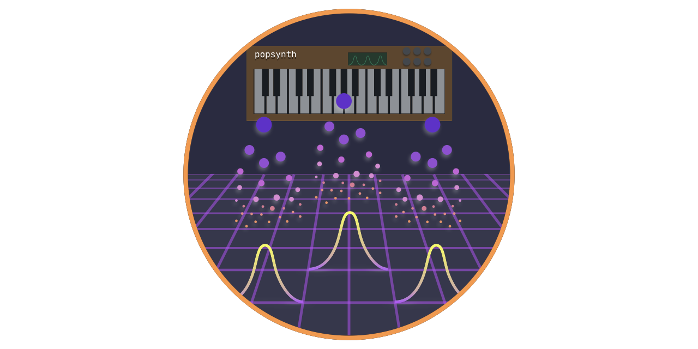
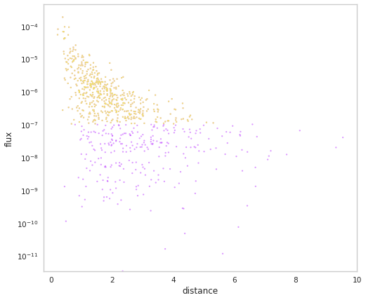
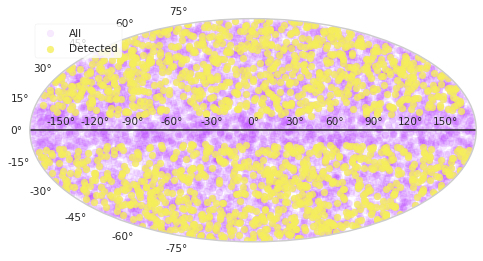

Welcome to popsynth’s documentation!
This framework provides an abstract way to generate survey populations from arbitrary luminosity functions and redshift distributions. Additionally, auxiliary quantities can be sampled and stored.
Populations can be saved and restored via an HDF5 files for later use. Population synthesis routines can be created via classes or structured YAML files.
Users can construct their own classes for spatial, luminosity, etc. distributions which can all be connected to arbitrarily complex selection functions.
Note
This is not Synth Pop. If you were expecting that… I suggest you check out Depeche Mode. Though, it is possible to combine coding and good music.


